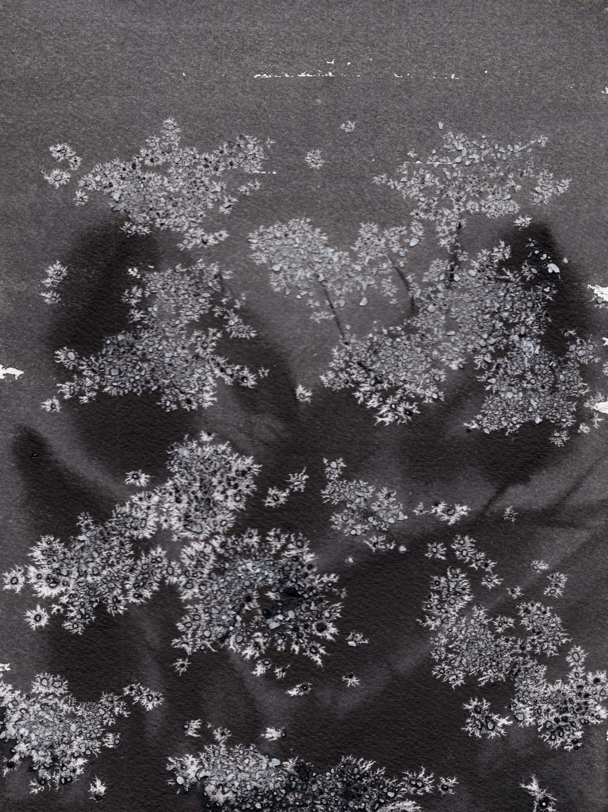
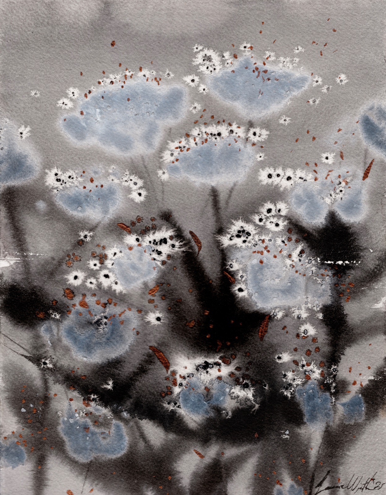
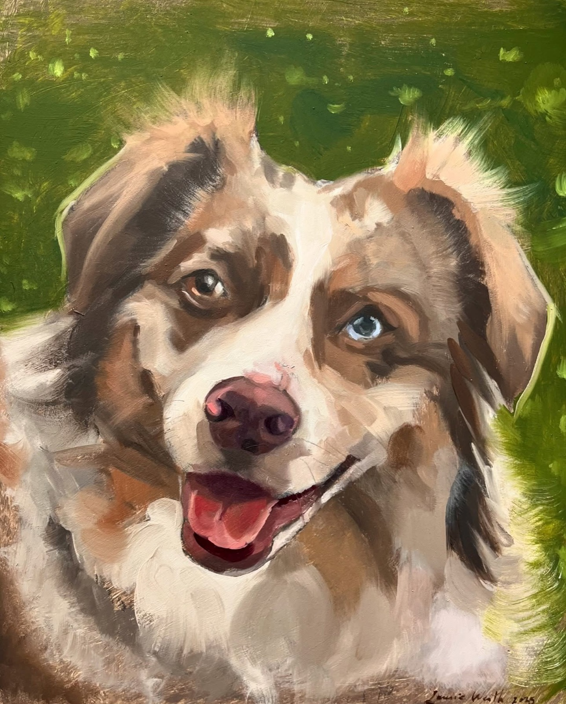
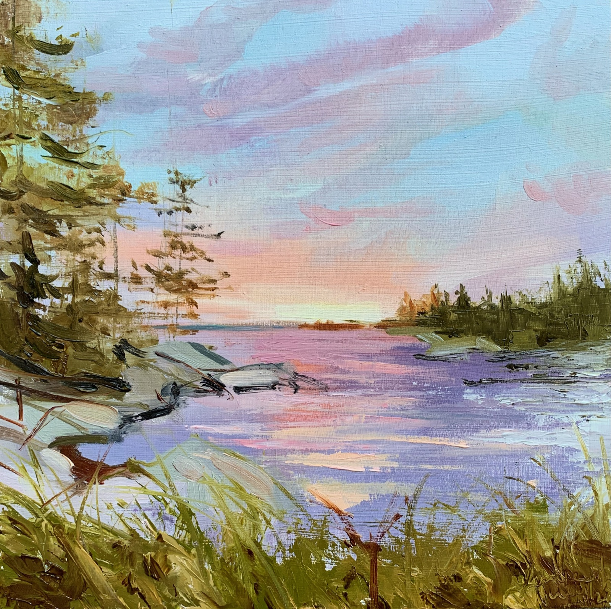
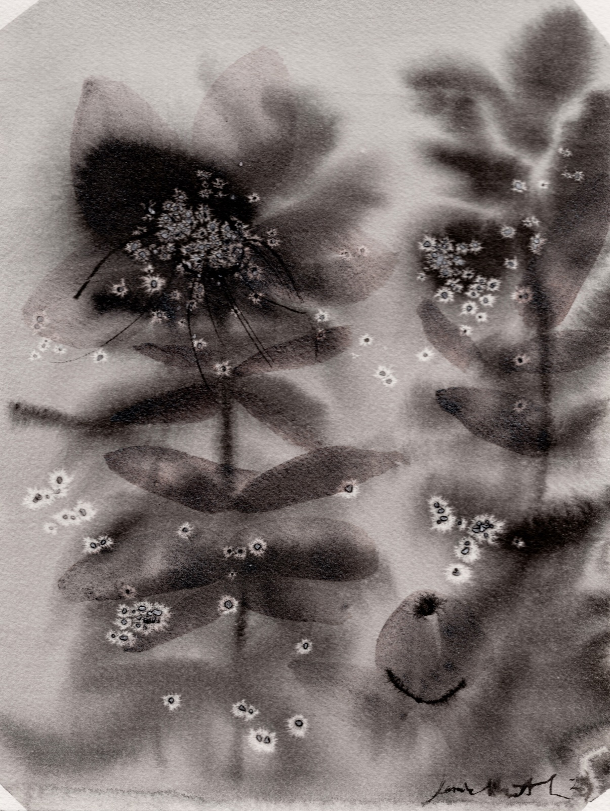
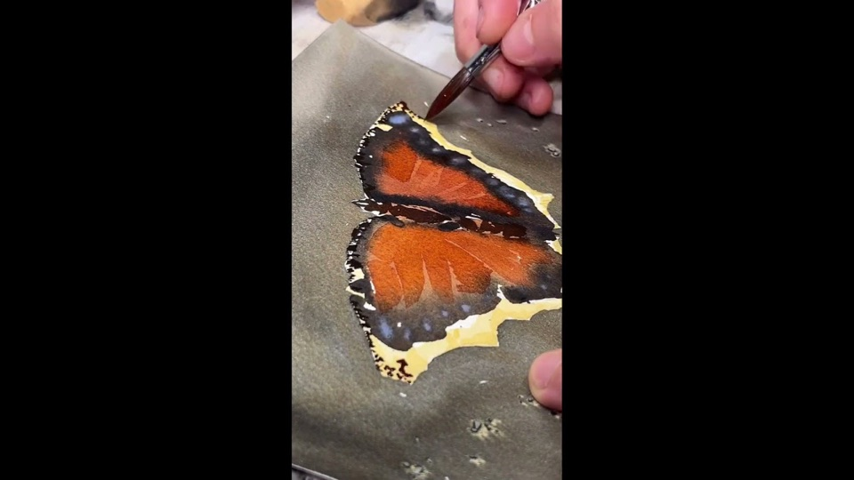
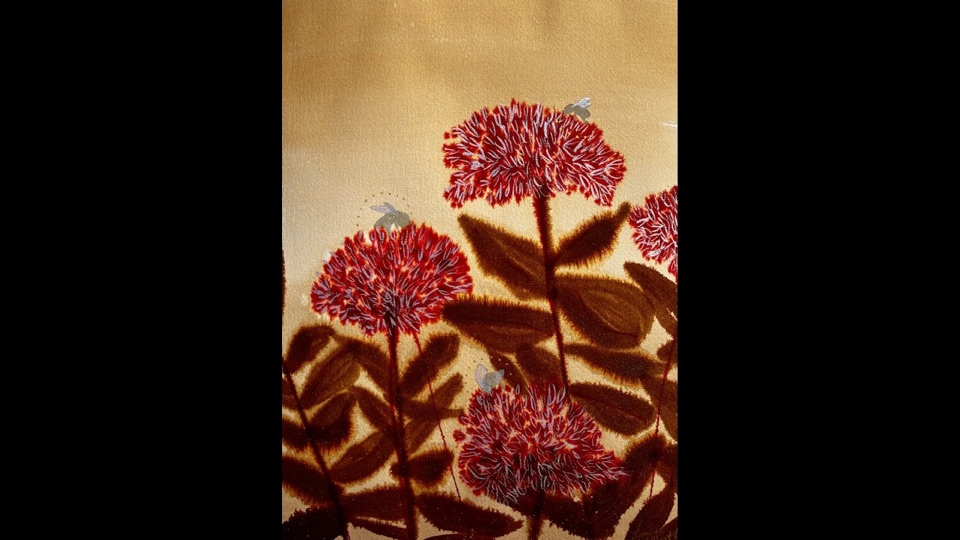
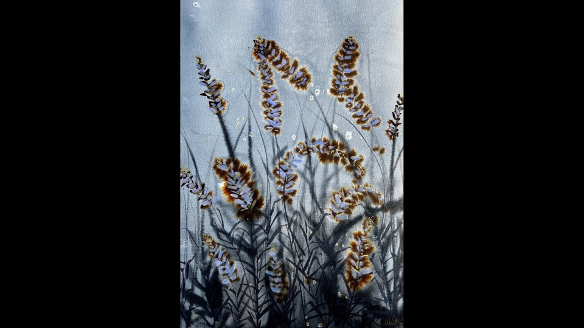

i

Ink, Watercolor & Salt
Botanical forms in pigment & water
Explore →Botanical paintings made of ink, mineral salt, and water — where delicate lines dissolve into washes of luminous color. Available as one-of-a-kind originals and archival prints, alongside animal portraits and custom commissions.


Botanical forms in pigment & water
Explore →
Pets & wildlife, painted in oil
Explore →
Quiet light, land & water
Explore →
Light and texture emerge naturally from controlled chaos.
Laurie Werth is a classically trained painter and graduate of the Pennsylvania Academy of the Fine Arts (PAFA). Rooted in traditional technique yet guided by instinct and experimentation, she has developed an unusual ink and watercolor process that bridges drawing and painting — where delicate lines dissolve into washes of luminous color.
Her work is a quiet celebration of wild nature. Botanical forms unfold in living patterns of pigment and water, while animals emerge with energy and grace, caught between movement and stillness — each piece a study of form and light, infused with a sense of wonder for the natural world.
Werth's paintings have been exhibited at PAFA, the Philadelphia Sketch Club, Projects Gallery (Philadelphia), Marquee (Asheville, NC), Hopkins House Gallery (Haddonfield, NJ), and Trolley Square Market (Wilmington, DE).
Each piece begins with a sometimes wild and impulsive ink painting — the structural gesture that anchors everything to come.
Mineral salt is scattered into the wet wash. As the water evaporates, it pulls pigment into organic, unrepeatable patterns.
Transparent layers of watercolor and acrylic build slowly — movement, atmosphere, and feeling emerging from the chaos.
Each one-of-a-kind original is scanned at high resolution and printed with pigment giclée inks on fine art paper.
Time-lapse process films — ink, salt, and water finding their form on the page.



A botanical study of your garden, a portrait of your pet, or a piece made for a particular wall. Laurie takes a limited number of commissions each season.
Be the first to see new releases and receive collector early-access to one-of-a-kind originals before they reach the shop.
No spam, ever. Unsubscribe anytime.